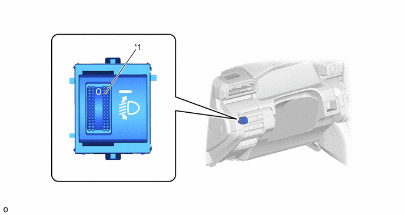

| Last Modified: 10-07-2025 | 6.11:8.1.0 | Doc ID: NM100000002G7K3 |
| Model Year Start: 2024 | Model: Tacoma | Prod Date Range: [12/2023 - ] |
| Title: LIGHTING (EXT): LIGHTING SYSTEM: MANUAL HEADLIGHT BEAM LEVEL CONTROL; 2024 - 2026 MY Tacoma Tacoma HV [12/2023 - ] | ||
MANUAL HEADLIGHT BEAM LEVEL CONTROL
FUNCTION OF MAIN COMPONENTS
|
Component |
Function |
|
|---|---|---|
|
Headlight Leveling Switch |
Operates the headlight leveling motor according to headlight leveling switch operation. |
|
|
Headlight Assembly LH |
Headlight Leveling Motor (LH) |
Operates the headlight leveling motor according to headlight leveling switch operation and changes the beam axis of the headlights in the vertical direction. |
|
Headlight Assembly RH |
Headlight Leveling Motor (RH) |
|
(a) The headlight leveling switch is installed to the bottom part of the instrument panel, and the headlight leveling motor is installed behind the headlight.
|
*1 |
Headlight Leveling Switch |
- |
- |
NOTICE:
- In normal conditions, use the headlight leveling switch in the level 0 position.
- When the headlight illumination range is tilted up due to additional luggage or passengers, operate the headlight leveling switch according to the luggage/passenger condition to lower the headlight beam axis. Also, after luggage is removed or passengers exit the vehicle, make sure to return the headlight leveling switch to the level 0 position.
- Perform beam axis adjustment with the headlight leveling switch in the level 0 position.
SYSTEM CONTROL
(a) A manual headlight beam level control function, which can be used to change the direction of the beam axis as desired from inside the vehicle according to changes in the vehicle posture (such as when loaded), is provided depending on the model in consideration of preventing dazzling drivers of oncoming vehicles. The function operates the headlight leveling motor according to condition signals from the headlight leveling switch (level 0 is the highest, level 5 is the lowest) and vertically adjusts the direction of the headlight, changing the beam axis.